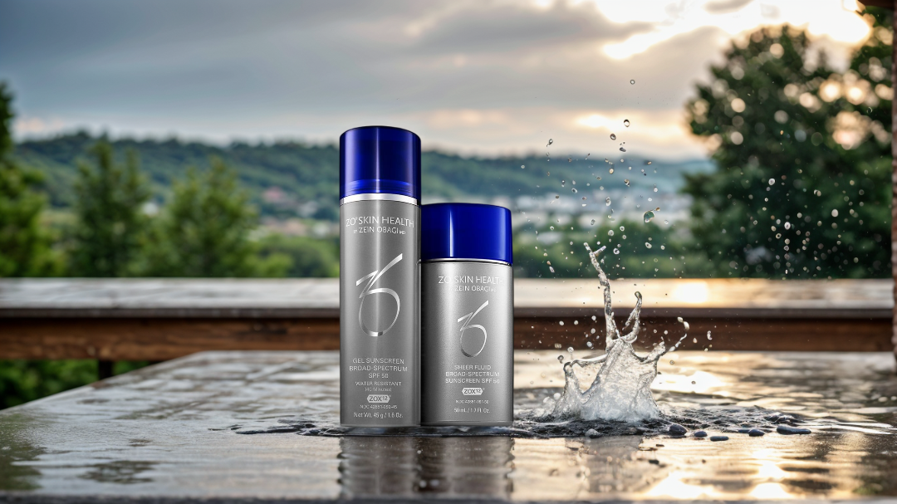

Background Diffusion: Your Creative AI Background Companion

PromeAI's Background Diffusion brings innovation to image processing, allowing users to generate and replace backgrounds with unprecedented ease. Our AI background generator is designed to make your editing tasks simpler and more creative, perfect for professionals and hobbyists alike.
Transform Your Images with AI Background Generator
Our powerful AI background generator swiftly extracts the main subject of your images, providing a blank canvas for your creativity. Whether portraits, products, or architectural photos, PromeAI ensures high-quality background generation for every use case.
Personalize Scenes with Custom AI Background Templates
Choose from a variety of pre-set background templates or describe your desired backdrop features for that unique touch. Our AI background changer adapts to your specific requirements, offering unparalleled flexibility for your image editing needs.
Easily Change Backgrounds with AI Background Changer
Not satisfied with the templates? Upload your own images, and let our AI background generator craft the perfect scenery, enabling seamless integration for impeccable results that truly stand out.
Versatile Background Generation for Every Need
PromeAI does not limit you to the original image size—resize as needed. Control the complexity of backgrounds with our AI-driven feature, ensuring backgrounds range from simple elegance to detailed finesse, catering to every artistic demand.
FAQ
What is PromeAI's Background Diffusion?
It's an AI background generator that allows for quick and efficient background generation and replacement in your images, offering high-quality, versatile background changes.
Can I use my own images for background replacement?
Absolutely! You can upload your chosen images or describe desired characteristics for a background, and our AI background changer will work its magic.
Can AI background generator handle different image types?
PromeAI is capable of generating and replacing backgrounds for various image types, including portraits, small goods, and buildings, all with high-quality output.
Is the Background Diffusion feature easy to use for beginners?
Definitely. Our AI background generator prioritizes user-friendliness. Even if you're new to image editing, you'll find the process intuitive and straightforward.
Can the background generator create backgrounds for complex subjects?
Certainly! PromeAI's Background Diffusion is designed to tackle complex subjects with precision, ensuring every detail is captured when generating your new background.
Unleash your creativity with PromeAI's Background Diffusion.